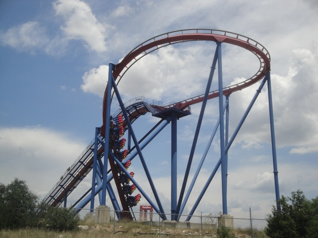
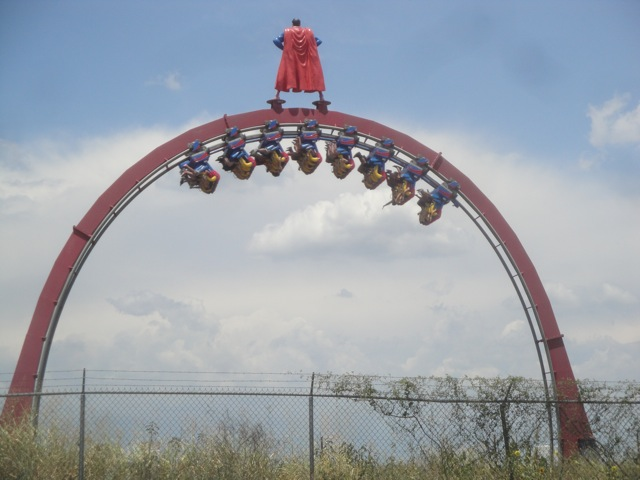

| |
Texas/Rocky Mtn Road Trip
Las Vegas/Castles'N'Coasters
Six Flags Fiesta Texas
Schlitterbahn Sea World San Antonio Gavelston Pier
Six Flags Over Texas Silver Dollar City Frontier City Colorado Elitch Gardens Lakeside Park Glenwood Springs
Well, we made it. After the first two days of the trip, which was Penn's awesome party, Vegas Coasters, and credit whoring in Arizona, we drove all the way out to Texas where all the big parks are at. Note to anyone wanting to drive from CA to TX, BEWARE of driving through West Texas. It is f*cking huge. The 13 hour drive from Phoenix AZ, to San Antonio TX was insane. The actual drive was crazy with the only stops being for dinner at Panda Express in El Paso, and a forced stop at the Sierra Blanca Checkpoint. Surprisingly, I didn't mind the monster drive through West Texas in the middle of the night. Just set cruise control to 80 mph, and its essentially like being at P2 at that point, just driving and flying past everyone else. We ended up arriving at San Antonio at 5:00 AM, got to our hosts house, passed out, and then got up and went on over to Six Flags Fiesta Texas.
YAY!!! Our first real park of the trip!!!!
 Gotta admit. This was one of the nicer Six Flags parks in the chain. =)
Gotta admit. This was one of the nicer Six Flags parks in the chain. =)
 All right. Lets start off with the star attraction of the park. =)
All right. Lets start off with the star attraction of the park. =)
You know, even at its full length, the Iron Rattler line was never really that bad.
 And expectations were met. Iron Rattler is an AMAZING RIDE!!!! =)
And expectations were met. Iron Rattler is an AMAZING RIDE!!!! =)
 Its fast, got some good laterals, a ton of ejector air...
Its fast, got some good laterals, a ton of ejector air...
And this heartline spin was totally awesome. A big thumbs up from Incrediblecoasters and a big win for Six Flags Fiesta Texas.
 Moving onto Six Flags Fiesta Texas' other great rides, we're now at Superman Krypton Coaster.
Moving onto Six Flags Fiesta Texas' other great rides, we're now at Superman Krypton Coaster.

This really is one of the better B&M Floorless coasters out there. So far, its my 2nd favorite just behind Dominator.

♫ Like a high jacked plane, or a runaway train,
or a speeding bullet, there’s no stopping this!
I left my heart in Metropolis! ♫
 Love the setting of this ride right off the Quarry.
Love the setting of this ride right off the Quarry.
 Speaking of great rides at Six Flags Fiesta Texas, Poltergeist is another goodie here.
Speaking of great rides at Six Flags Fiesta Texas, Poltergeist is another goodie here.
If you thought that Poltergeist was just Flight of Fear outdoors, think again.
This ride is crazy and disorienting!!! I love it!!! =)
 This photo should give a sense of why Poltergiest is as crazy as it is.
This photo should give a sense of why Poltergiest is as crazy as it is.
 Hey. They have a Batman Clone here. Sweet, you can never get too much Batman.
Hey. They have a Batman Clone here. Sweet, you can never get too much Batman.
 This Batman has a long history. It was first built at some Japanese Park. That closed, and Six Flags bought the Batman and moved it to Six Flags New Orleans. Then Hurricane Katrina hit, SFNO crumbled, and they moved Batman over to Six Flags Fiesta Texas.
This Batman has a long history. It was first built at some Japanese Park. That closed, and Six Flags bought the Batman and moved it to Six Flags New Orleans. Then Hurricane Katrina hit, SFNO crumbled, and they moved Batman over to Six Flags Fiesta Texas.
 And contrary to popular belief, this was not one of the weakest Batmans out there. It ran fine, just like any other Batman.
And contrary to popular belief, this was not one of the weakest Batmans out there. It ran fine, just like any other Batman.
 Really, the only problem is the name. Seriously, that is NOT a Goliath. NOT EVEN CLOSE!!!!
Really, the only problem is the name. Seriously, that is NOT a Goliath. NOT EVEN CLOSE!!!!
Well, we got all the good credits out of the way. So lets move onto the crap now.
 Surprisingly enough, I actually really liked this Boomerang.
Surprisingly enough, I actually really liked this Boomerang.
 One of the smoothest Boomerangs ever. =)
One of the smoothest Boomerangs ever. =)
Continuing with getting all the credits, we hit up the Mine Train next.
The bad news is that all the theming I had seen on this ride from previous videos was completely gone. =(
But the good news is that this was still one of the better mine trains out there.
 Hey, the wait for Iron Rattler is still decent. Lets go for another ride on it now!!!
Hey, the wait for Iron Rattler is still decent. Lets go for another ride on it now!!!
I love this ride. =)
 Its good in the front, but its GREAT in the back since thats where the airtime is.
Its good in the front, but its GREAT in the back since thats where the airtime is.
This park is beautiful. It just might have a shot at a spot on the Top 10 Park Settings List.
 Sigh, lets get this over with.
Sigh, lets get this over with.
Cha-Ching!!!
Blah. Why do I need to bother with this Starflyer when I can just ride the 400 ft one at SFOT a couple days from now?
 Mmm, more Superman Krypton Coaster.
Mmm, more Superman Krypton Coaster.
 Nice bigass loop on Superman Krypton Coaster.
Nice bigass loop on Superman Krypton Coaster.
 I love just how spacious this ride is and how so much could fit in this one peice of land.
I love just how spacious this ride is and how so much could fit in this one peice of land.
 Last credit to get at the park.
Last credit to get at the park.
Blah. Its just a Tony Hawk clone. Nothing special. Ridden this ride a million times.
But hey. I had fun on this ride. It spun somewhat well.
And best of all, they had a single riders line that worked. =)
I didn't ride the S&S Tower here, but I did hear good things about it from Cody. Looks fun.
Yep. You are seeing that correctly. This Six Flags park actually manages to have a dark ride.
"Jinkies!!! This isn't right!! Don't worry Six Flags. We'll see who planted this dark ride in your park."
Oops. Sorry I've been saying your name wrong all these years Scoobert.
Dude!!! The frisbee here was AMAZING!!!! It had some decent swinging and it spun A LOT!!!! Great program!!!
Well I'm already dizzy from the frisbee. Let's throw in some Poltergeist rides on top of that!!!
I can only imagine how I'd feel after an hour of ERT on this thing.
And of course, we have to finish off the night with a ride on Iron Rattler.
And of course, on our rides, we were able to see Six Flags Fiesta Texas' firework show on the ride.
Thank you Six Flags Fiesta Texas. I had a good day and throughly enjoyed your park. =)
Schlitterbahn
Home
|